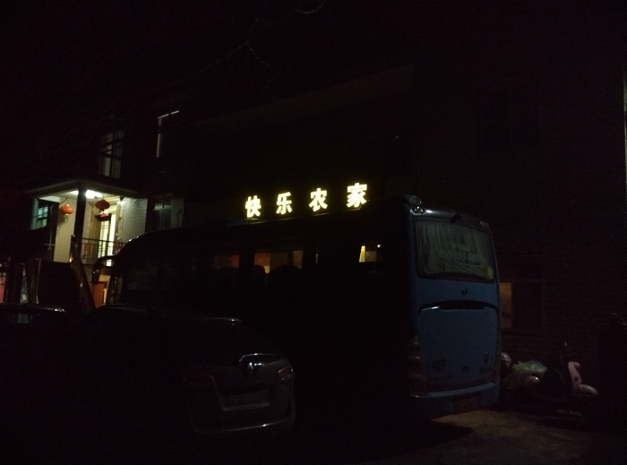
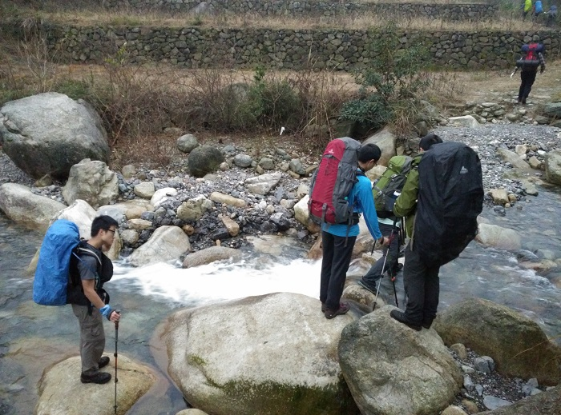
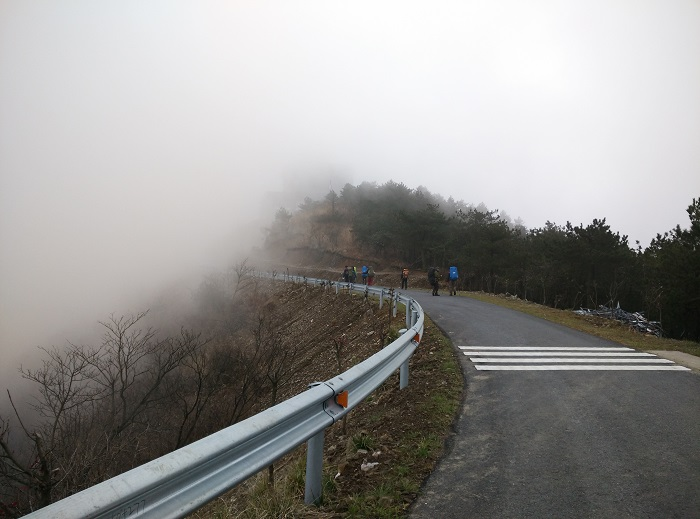
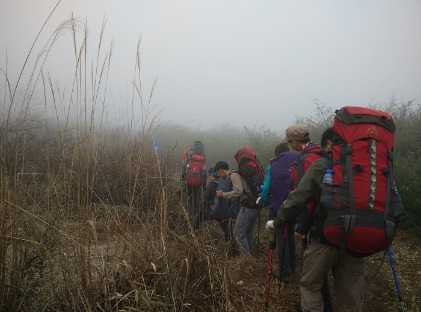
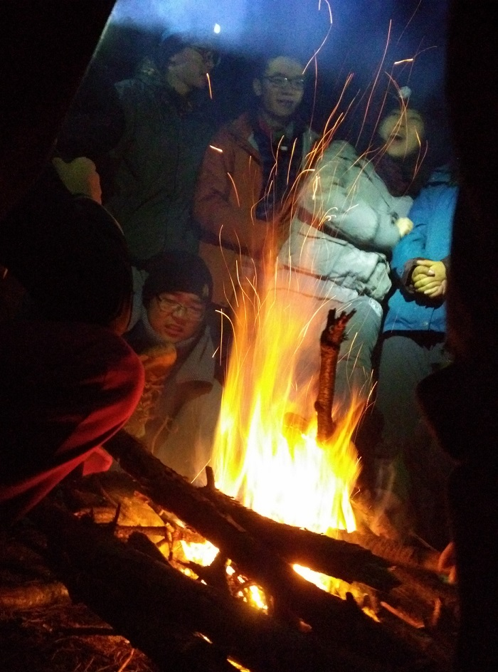
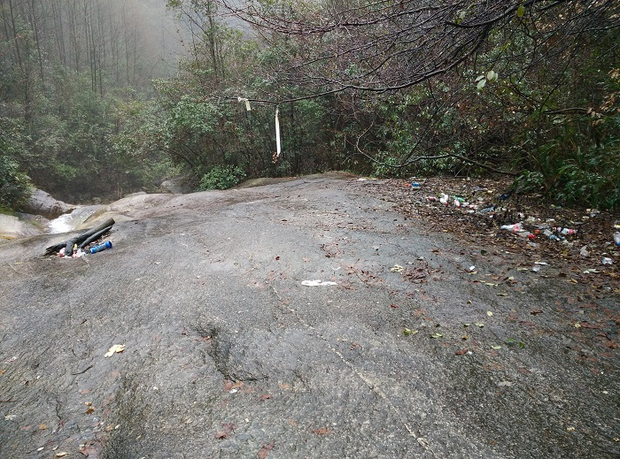

发信人: hemind(TD), 信区: outdoor
标 题: 大明山冬训pic
发信站: 饮水思源 (2015年12月14日17:37:01 星期一)
依然是老王家
 screen.width - 200){this.width = screen.width - 200}">
过溪过溪
 screen.width - 200){this.width = screen.width - 200}">
曾经的牵牛岗被气象站代替
 screen.width - 200){this.width = screen.width - 200}">
千亩田
 screen.width - 200){this.width = screen.width - 200}">
好不容易升起的篝火
 screen.width - 200){this.width = screen.width - 200}">
如今垃圾遍地的休息点,曾经的小yanhao怎么样了呢
 screen.width - 200){this.width = screen.width - 200}">
--
Work hard, Climb harder.
※ 来源:·饮水思源 bbs.sjtu.edu.cn·[FROM: 58.196.144.15]
※ 修改:·hemind 于 2015年12月14日18:17:52 修改本文·[FROM: 10.185.138.27]
|